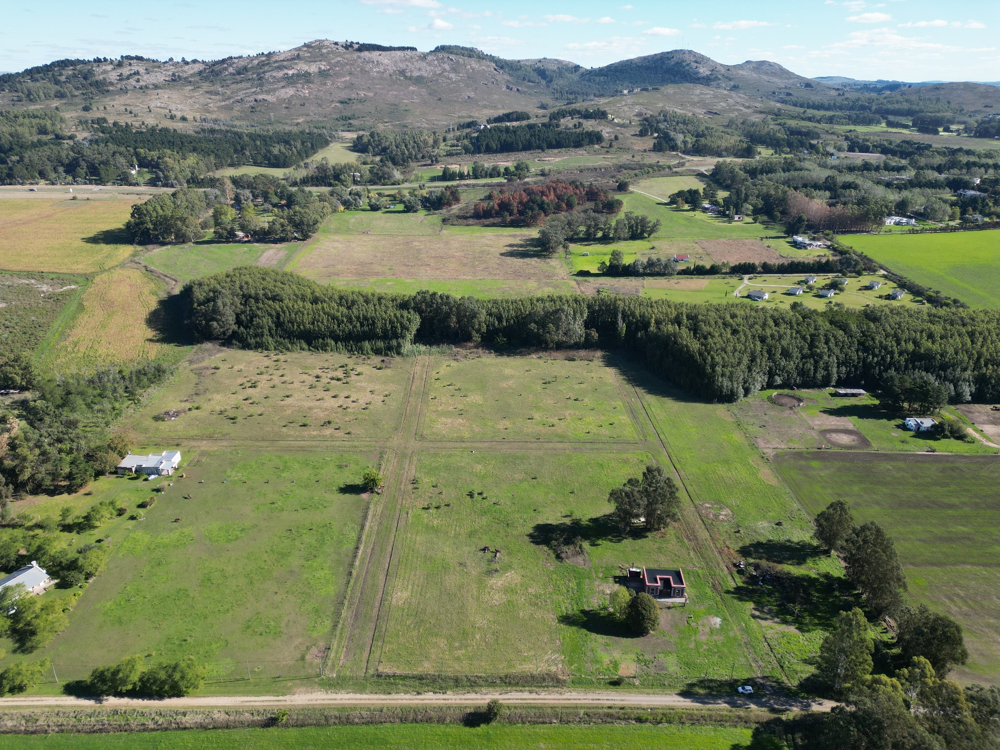
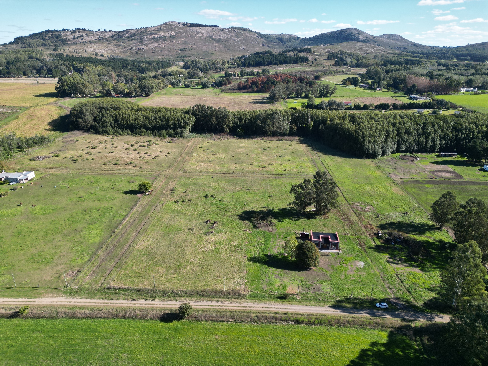
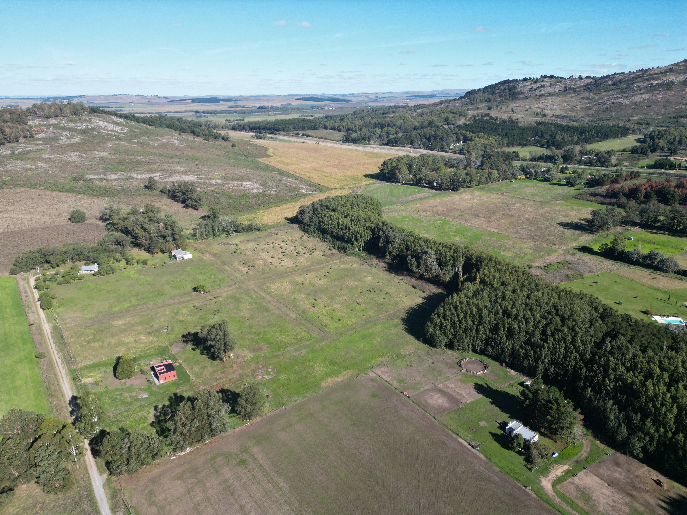
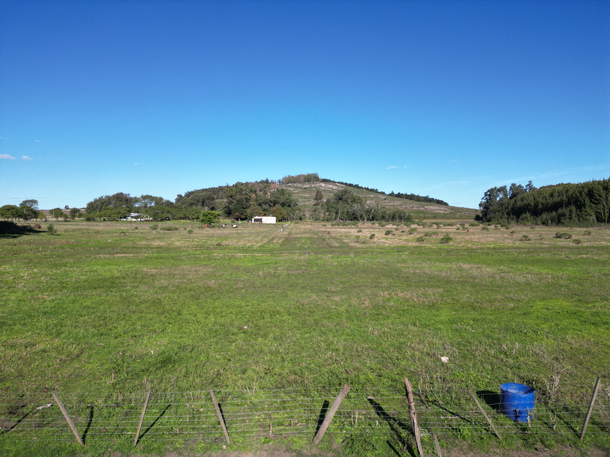
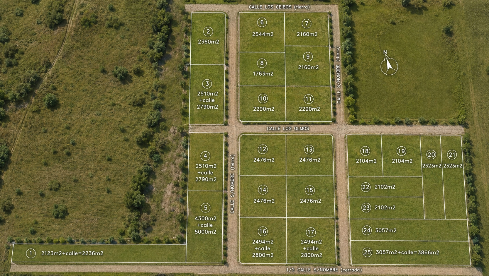

Naturaleza, amplitud y servicios a 15 minutos del centro
25 lotes de aproximadamente 2.500 m² en la zona de El Paraíso. Con electricidad y gas, rodeados de sierras y naturaleza. El lugar para construir la casa que siempre soñaste.
Precio USD 50 /m²
El Proyecto
Las Tapias es un loteo residencial de 25 parcelas de gran amplitud, ubicado en la zona de El Paraíso, en el corazón de la serranía tandilense. Un barrio abierto pensado para construir a tu ritmo, con toda la libertad que da el espacio.
Cada lote cuenta con acceso a electricidad y gas natural, lo que elimina las principales barreras para comenzar a construir. Las calles internas están definidas y el proyecto cuenta con documentación en orden.

Imágenes del predio
Vistas aéreas del loteo y su entorno natural



Experiencia inmersiva
Descubrí la belleza natural del desarrollo, sus vistas serranas, los caminos internos y la ubicación privilegiada a pocos minutos de Tandil.
Plano del loteo

* El plano es ilustrativo. Las superficies definitivas surgen del plano de mensura aprobado. Algunos lotes incluyen fracción de calle cedida al municipio.
Disponibilidad
| N° | Sup. neta | Sup. total | Precio aprox. | Observación | Estado |
|---|---|---|---|---|---|
| 1 | 2.123 m² | 2.236 m² | USD 111.800 | Calle s/nombre (tierra) | Disponible |
| 2 | 2.360 m² | — | VENDIDO | Calle Los Ceibos | VENDIDO |
| 3 | 2.510 m² | — | USD 125.500 | Calle Los Robles | Disponible |
| 4 | 2.510 m² | 2.790 m² | USD 139.500 | Incluye fracción de calle | Disponible |
| 5 | 4.300 m² | 5.000 m² | USD 250.000 | Incluye fracción de calle | Disponible |
| 6 | 2.544 m² | — | USD 127.200 | Calle Los Ceibos | Disponible |
| 7 | 2.160 m² | — | USD 108.000 | Calle Los Ceibos | Disponible |
| 8 | 1.763 m² | — | USD 88.150 | Interior | Disponible |
| 9 | 2.160 m² | — | USD 108.000 | Calle s/nombre (tierra) | Disponible |
| 10 | 2.290 m² | — | USD 114.500 | Calle Los Olmos | Disponible |
| 11 | 2.290 m² | — | USD 114.500 | Calle Los Olmos | Disponible |
| 12 | 2.476 m² | — | USD 123.800 | Calle Los Olmos | Disponible |
| 13 | 2.476 m² | — | USD 123.800 | Calle Los Olmos | Disponible |
| 14 | 2.476 m² | — | USD 123.800 | Interior | Disponible |
| 15 | 2.476 m² | — | USD 123.800 | Interior | Disponible |
| 16 | 2.494 m² | 2.800 m² | USD 140.000 | 1/2 Calle s/nombre cerrada | Disponible |
| 17 | 2.494 m² | 2.800 m² | USD 140.000 | 1/2 Calle s/nombre cerrada | Disponible |
| 18 | 2.104 m² | — | USD 105.200 | Interior | Disponible |
| 19 | 2.104 m² | — | USD 105.200 | Interior | Disponible |
| 20 | 2.323 m² | — | USD 116.150 | Calle s/nombre (tierra) | Disponible |
| 21 | 2.323 m² | — | USD 116.150 | Calle s/nombre (tierra) | Disponible |
| 22 | 2.102 m² | — | USD 105.100 | Interior | Disponible |
| 23 | 2.102 m² | — | USD 105.100 | Interior | Disponible |
| 24 | 3.057 m² | — | USD 152.850 | Interior | Disponible |
| 25 | 3.057 m² | 3.866 m² | USD 193.300 | Incluye fracción de calle | Disponible |
* Precio calculado a USD 50/m² sobre la superficie total donde corresponde. Valores de referencia sujetos a verificación con mensura definitiva.
Ubicación
Escribinos por WhatsApp y coordinamos una visita sin compromiso. Respondemos dentro de las 24 horas.
+54 9 2494 469394